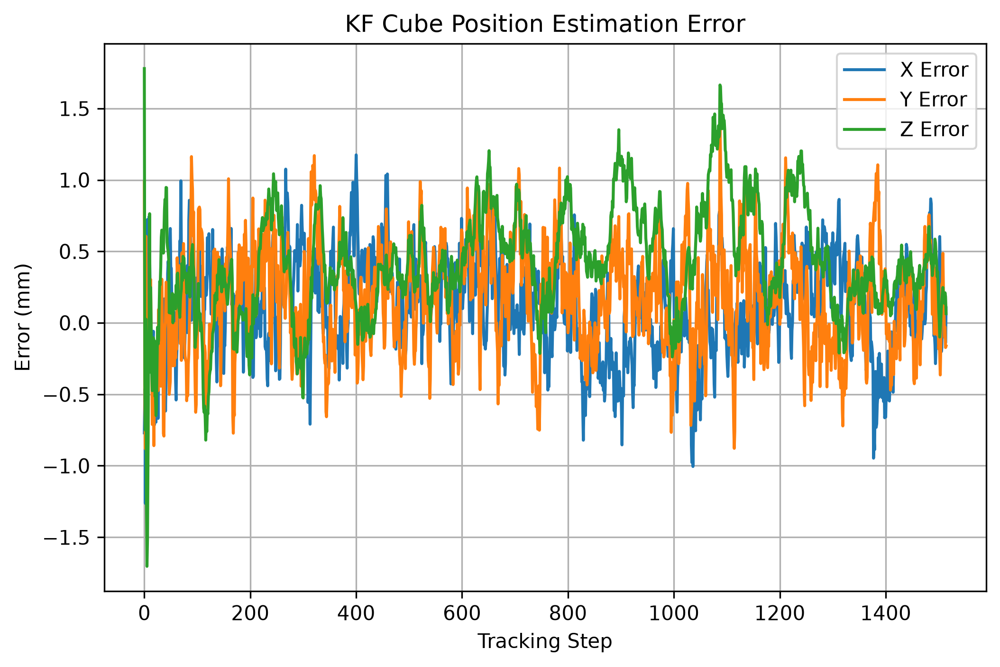
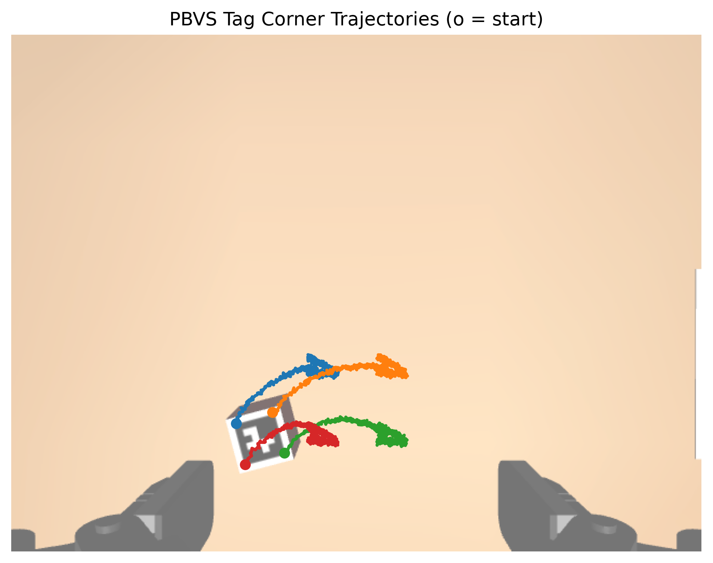
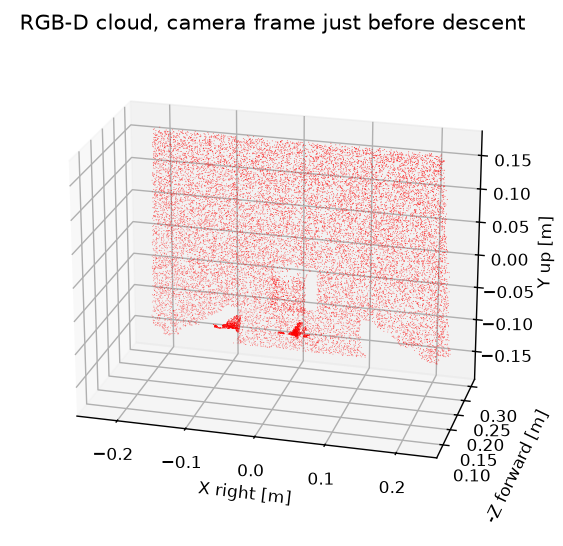
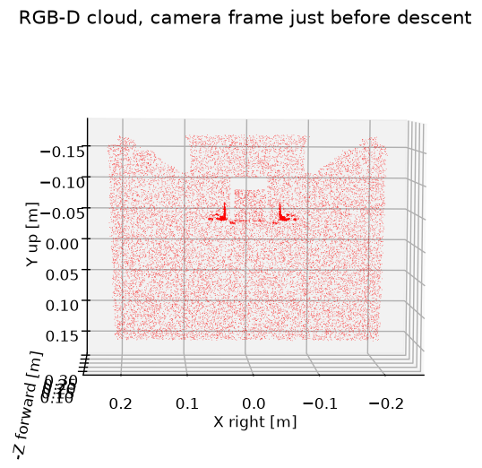
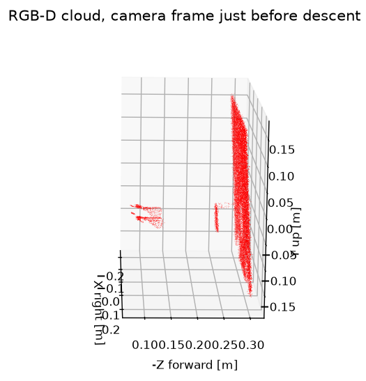
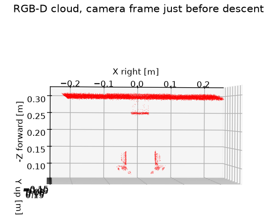

Camera Calibration
Convergence error despite noise is uniform and converges after 1400 iterations


Our project follows track B, a robot arm driven by a KF filter, PBVS and a joint space state controller to complete a pick task.
Our approach utilises these systems to follow a cube based on an estimated position, tracking and centering the cube in the cameras perspective, with an eye-in-hand approach. Position based visual servoing tracks an aruco tag to provide positions to the filter, which outputs the future position to drive the robot using the joint space state controller. After the system observes the cube stopping, if the arm is within 0.01m of the target, it uses depth based object localisation to determine a dropping distance, before clamping and returning to its initial position with the cube.
The video below shows the overall system runtime & results.
Overview and visualisation of the project, one undisturbed test, one disturbed test, and all output graphs from overall run averages.
Convergence error despite noise is uniform and converges after 1400 iterations
Tracking and estimation error across all axes demonstrating stable state estimation and trajectory tracking.

Overall performance is good despite camera noise, with all errors maintaining relatively low disparity between estimated and true states

Overall the system demonstrates robust code via object position randomisation, and added noise to the camera feed to be acted upon. The overall system implements a KF filter which demonstrates low positional errors (highest ~4mm) for the cubes tracked position. Camera calibration also returns consistently with a pixel error of ~1 px in all scenarios. Which is then used alongside a depth module to determine cube position with high levels of accuracy (<0.025m at end position). The LQR joint controller used also demonstrates robustness, with the average error being ~0.6 degrees. Larger jumps are seen when picking the cube up, as the velocity and acceleration are no longer smooth as during tracking, and attempt to approach the max velocity.
Potential fixes & improvements for the system: Implmentation of a quintic polynomial approach for trajectory generation, rather than a trapezoidal/fastest approach could reduce jerk on the system and potential physical errors; Implementation of an extended kalman filter could allow further filtering of errors if the cube were to be moving at higher velocity, improving results even under more camera frame noise.
The integration of a LQR controller with visual servoing & KF estimation proved to be robust and autonomous for the provided pick task under a camera with slight noise. The robustness against measurement noise highlighted benefits of decoupling state estimation from reference generation. However, the primary limitation lies in the current state machine boundaries, where large disturbances to error can be observed due to the quick changes in robot position. Further improvement could be made to unify the tracking and grasping tasks into a more continuous framework (Quintic Polynomial) to ensure state and input constraints remain smooth under different conditions, from tracking to payload picking.
A linear Kalman filter was implemented to track the cubes estimated position and velocity in the world frame. Measurements were taken from the ArUco tag centre, back projected using RGB-D depth and the calibrated intrinsics, these coordinates in the camera frame were then transformed to the world frame via forward kinematics at the noisy joint angles. The filters main role is assisting the controller by mitigating measurement noise from the camera, estimating the cubes unmeasured velocity which feeds the PBVS feed forward, and knowing when the cube is stopped so we can initiate our pick.
The filter was tuned by adjusting the measurement noise covariance Rn across all axes and targeting approximately 95% of estimation errors within the 2sigma bound, process noise covariance Qd was tuned to target a NIS of 3 at the constant cube speed of 2cm/s. To handle dynamic velocities, the process noise covariance matrix Qd was scaled linearly with the estimated velocity from the filter.

Normal Tracking: Standard 2cm/s cube speed trajectory tracking

Tag Dropout: Forced tag dropout for 4s, KF coasts based on predicition
From these plots taken during a PBVS run we can see that our KF tracks the cubes position well, with minimal deviation from the true path. In the event of the cameras view of the tag being obstructed the KF will continue to predict, which results in the robot continuing to coast in the direction of its last movement.
The tests below were run on the cube_estimator_test.py file, the arm was parked at its ~25cm hover position used for tracking in the PBVS and the cube was moved around the camera frame on its randomised path. The averages across 10 runs were taken, with random paths for all runs and the cube speed was varied to see the performance trade-offs between static tuning and velocity scaling. For the higher cube speeds, the path spline length was increased to make approximate runtime similar. A NIS value of around 3 is ideal with approximately 95% of our errors being within the 2sigma bounds for each axis.
| Cube Velocity | Qd Scaled w/Velocity | X Within | Y Within | Z Within | Avg NIS | Avg Position Error |
|---|---|---|---|---|---|---|
| 2 cm/s | No | 93% | 93% | 92% | 3.01 | 0.7 mm |
| 2 cm/s | Yes | 94% | 94% | 94% | 3.02 | 1.0 mm |
| 4 cm/s | No | 62% | 88% | 96% | 3.96 | 0.5 mm |
| 4 cm/s | Yes | 83% | 92% | 96% | 3.23 | 0.8 mm |
| 8 cm/s | No | 21% | 40% | 94% | 17.83 | 1.8 mm |
| 8 cm/s | Yes | 74% | 89% | 95% | 4.68 | 1.1 mm |

2cm/s with Qd scaling errors within 2sigma plot
At low cube speeds of 2cm/s both configurations achieve nearly identical performance and consistency across the 10 runs. When subjected to 8cm/s speeds without scaling, the static tuned filter becomes severely overconfident and does not leave enough leeway in the models prediction which can be seen in our high NIS average of 17.83 and only 21% of our X axis errors being within the 2sigma bounds.
By scaling the process noise covariance matrix Qd with our estimated velocity, we are able to dynamically adjust the filters uncertainty to account for the higher speed. While it does not bring our NIS and errors within the 2sigma bounds back to perfect levels, they are significantly better with an average NIS of 4.68 and 74% of our X axis error within the 2sigma bounds. At the lower cube speeds of 2cm/s and 4cm/s, our unscaled filter has lower average position error at 0.7mm vs 1mm for 2cm/s and 0.5mm vs 0.8mm for 4cm/s. While this may look like a good result for our 4cm/s, 62% of the X axis error within shows us that it is overconfident and cannot be trusted due to its high uncertainty.
Due to the cube sitting on the flat table surface, we have little variation in our Z axis error despite the changes in cube speed. The error we are seeing is likely caused by camera noise and also encoder noise from the forward kinematics used to transform the cubes coordinates from the camera frame to the world frame.

8cm/s Scaled: Average error is within 1-2mm on X, Y, and Z.

8cm/s Unscaled: Severely overconfident filter with errors up to 7.5mm in the X axis, over 4mm in the Y axis, the Z axis remains consistent with other trials at ~1mm.
A Position-Based Visual Servoing (PBVS) controller was developed to track the moving cube and position the camera 25cm directly above the target. The system calculates the 3D Cartesian error between the camera and the target, feeding the Kalman Filter's estimated cube velocity forward into the control loop to minimize steady-state tracking lag. To ensure safe and stable operation, a maximum Cartesian velocity limit of 0.10 m/s is enforced.
The visual servoing loop continuously tracks the target along its randomized spline path until it rests. A stop is assigned at 0.002m/s to avoid potential errors. Once stationary, the PBVS controller tunes the arm's position until 3D translational error falls below a 5mm tolerance. After converging, the system uses the center depth camera reading to calculate the exact descent distance, compensating for the 10cm camera-to-gripper offset before initiating the final grasp.
Error Convergence: 3D position error norm decaying over control iterations.

Feature Tracking: Image-space trajectories of the ArUco marker corners during alignment.
Across multiple evaluation runs, the PBVS system successfully rejects noise and drives the 3D position error down to the required threshold.
| Evaluation Metric | Value |
|---|---|
| Convergence Tolerance | 10.0 mm |
| Stop Detection Threshold | < 0.002 m/s (over 100 frames) |
| Max Commanded Velocity | 0.10 m/s |
| Mean Euclidean Position Error (Example) | ~0.88 mm |
| Max Euclidean Position Error (Example) | ~2.47 mm |


Initially our robot gripper would lag behind the cube by a significant amount as PBVS was acting on its own error, meaning it must fall behind to generate movement. By feeding the cubes estimated velocity from the KF, we make the end of the robot (the gripper) move at the cubes estimated velocity, leaving the error to handle small disturbances instead of the entire arm movement. This greatly increased the ability of the robot to follow the cube while it moved across the table. The Z measurements on the plots sits at hover distance for the gripper, the KF estimates the cube at 5cm as it is based on the tag position on top of the cube while mujocos position is the centre of the cube.
An LQR controller was used to control the six joints of the UR5e robot, helping them move accurately to their target positions. A Luenberger observer was also used to estimate joint speeds from position measurements.
Testing showed that the controller was stable, all six joints reached their targets, and the observer accurately estimated joint speeds.

The system uses depth based object localisation via depth map processing to produce a point cloud, then cloud processing plane segmentation using RANSAC, and DBSCAN to identify objects in physical space as well as determine the descent distance for the end effector to stably clamp the cube. Cloud processing, table depth, identified objects and calculated attributes are reported in the terminal. Original implementation used only RGB-D depth measurements to determine the extent of the descent, whereas the latest method accounts for noise during cloud processing and bases descent distance on calculations of the cube's geometry.




For further improvement, geometry metrics other than the z-component of the centroid of identified objects could be used to verify their position relative to the end effector and make slight adjustments of the end effector's position along the x and y axes for higher precision. Furthermore, plotted comparisons to ground truth and previous depth-only method should be implemented to quantitatively evaluate the accuracy of the current implementation.
Ben: Position Based Visual Servoing, Github page, Github README.md, Camera Calibration
Julian: KF Filter, Scene Setup, Random Cube Spline (utils.py), Depth based camera logic implementation
Mary: RGB-depth camera logic, Depth Based Object Localisation output & implementation
Nick: Joint Space State Controller, Demo Video
Ben: Used for refactoring code, removing unecessary functions (blind descent/ascent after depth implementation); evaluating errors from incorrect code; and help with transitioning from a true state model to both noisy & encoded based on the joint space state controller, and a calculated image matrix rather than direct from mujoco; Plotted graphs used AI to be generated in evaluate_runs to generate graphs based on the accumulated errors.
Julian: Used for assistance in debugging/understanding errors, finding information on how to setup mujoco and mujoco menagerie, the random spline path was generated by AI with some modifications made for random rotation, AI genererated plotted graphs (with slight user adjustments), HTML formatting for project page.
Mary: Used for finding information on mujoco camera conventions, explanations of tutorial code to inform application of certain code structures in program (appication of validity-filtering mask, displaying point cloud plot with matplotlib, identifying objects from a point cloud), troubleshooting code and python version compatibility errors
Nick: Used primarily for debugging, understanding errors and error correction. was also used to help organise code adding headers for better readability. was also used in assisting with mujoco and mujoco menagerie setup and python version compatibility issues